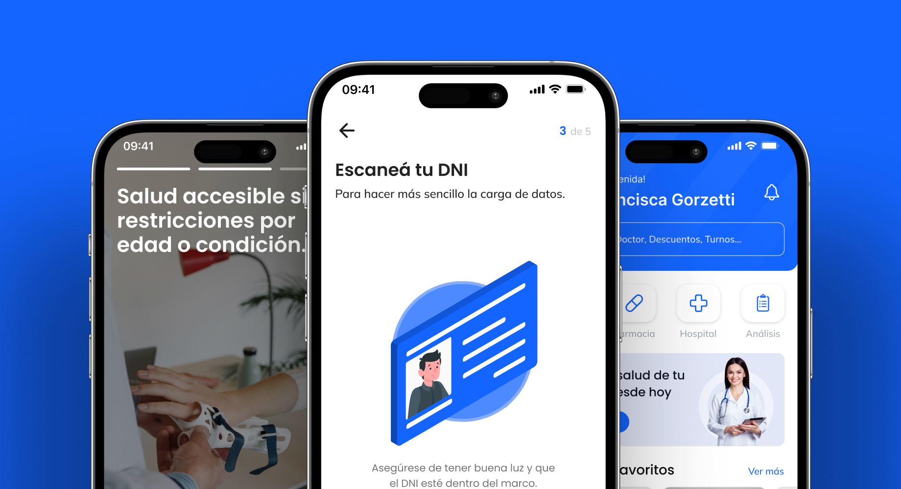
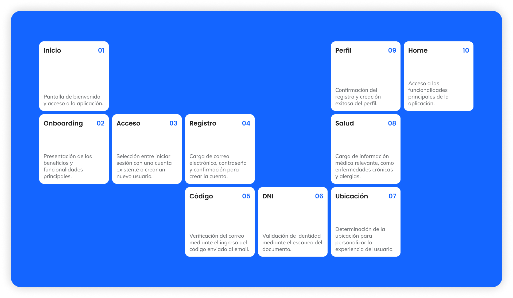
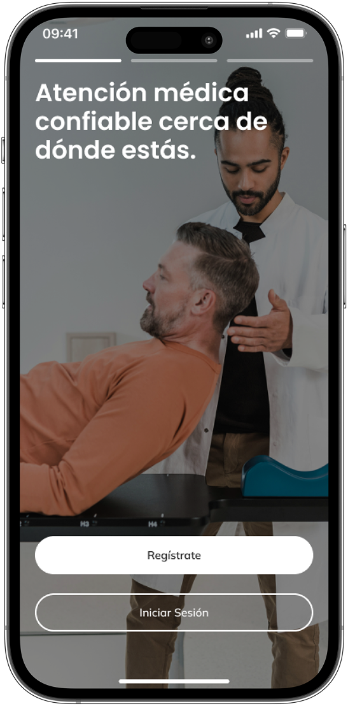
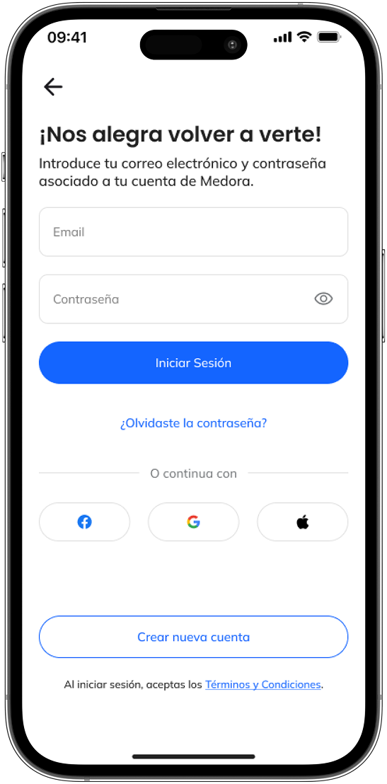
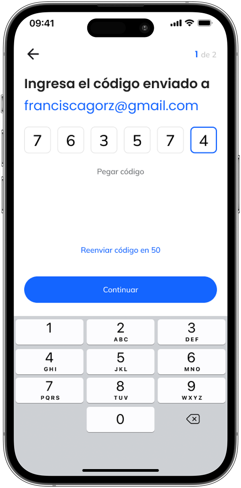
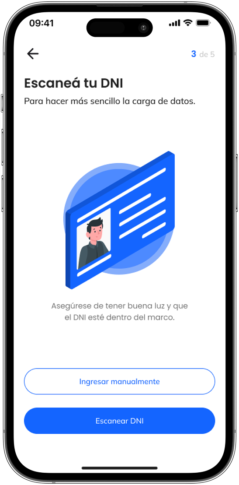
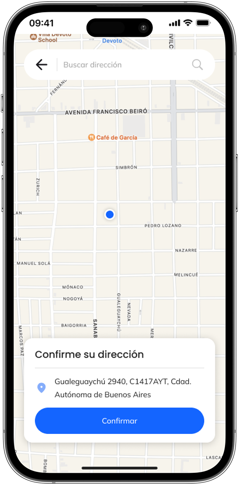
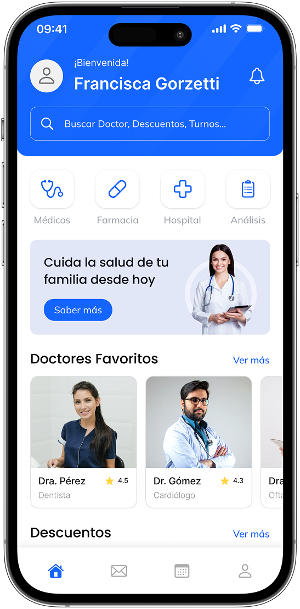

Benchmark
Análisis de competencia
Para ver cómo otras apps de salud resuelven el onboarding, el registro y el inicio de sesión.
Caso 01 · App mobile
Una app para acceder a servicios de salud desde un solo lugar. El foco del caso: el registro, el primer paso y el que más gente abandona.

01 / El desafío
Medora reúne en una app médicos, farmacias, hospitales, análisis y descuentos.
Antes de llegar a todo eso, hay que registrarse. En las apps de salud, ese proceso suele ser largo o poco claro. Pide muchos datos, no explica para qué y genera fricción justo en los primeros minutos de uso.
Por eso el registro tenía que responder rápido dos preguntas: cuánto me falta y para qué me piden esto.
02 / Investigación
Benchmark
Para ver cómo otras apps de salud resuelven el onboarding, el registro y el inicio de sesión.
User persona
Administrativa en Buenos Aires, trabaja a tiempo completo y usa apps para resolver tareas cotidianas. Quiere gestionar turnos y su información de salud desde un solo lugar.
Pierde tiempo en trámites. Saca turnos por teléfono o de forma presencial.
Los registros la frenan. Los encuentra largos o confusos.
Su información está dispersa. No tiene sus datos médicos centralizados.
03 / La oportunidad
Cada dato que se pide es un momento en el que la persona puede abandonar. El registro tenía que ser:
Una sola tarea por pantalla y progreso siempre visible.
Los datos que se piden (ubicación, alergias, condiciones) sirven para personalizar el home, no solo para completar un formulario.
04 / La decisión clave
En lugar de un formulario largo con nombre, apellido, número de documento y fecha de nacimiento, el registro le pide a la persona que escanee su DNI. Los datos se completan solos y solo hay que confirmarlos.
La carga manual queda disponible como alternativa, para quien no pueda o no quiera escanear.
Progreso visible. Un indicador (“3 de 5”) muestra en qué paso está y cuánto falta.
Indicaciones antes de escanear. Consejos de luz y encuadre para que salga bien en el primer intento.
Verificación antes de seguir. Vista previa del documento para confirmar que los datos se leen, o volver a escanear.
Atajos para entrar. Inicio de sesión con Google o Apple, además del correo.
05 / Flujo de usuario
El registro se divide en pasos cortos, cada uno con una sola tarea. En “Acceso”, quien ya tiene cuenta inicia sesión y va directo al home. Quien no tiene cuenta sigue el recorrido de registro.

06 / Diseño de interfaz

01Propuesta de valor y dos caminos claros: registrarse o iniciar sesión.

02Correo y contraseña, Google o Apple, y recuperación de contraseña sin salir del flujo.

03Código enviado al correo, con teclado numérico y opción de reenviarlo.

04Escaneo guiado, verificación del documento e ingreso manual como alternativa.

05Dirección confirmada en el mapa y preguntas simples sobre alergias o condiciones.

06Cuenta creada y acceso a médicos, farmacias, hospitales, análisis y descuentos.
07 / Resultado
El diseño convirtió un proceso que suele ser largo y confuso en un recorrido por pasos cortos, con progreso visible y menos datos para tipear.
Contacto
Si tu equipo necesita simplificar procesos complejos, hablemos.